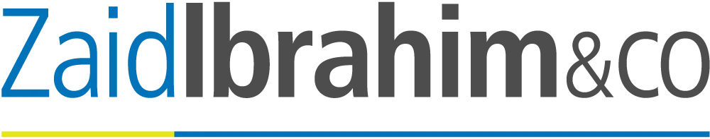

My Professional Journey
A showcase of relevant experience, key projects, and professional credentials.
Work Experience
My professional experience is focused on applying academic knowledge in a real-world environment.
-
 Internship: Administrative and IT
Company: ZaidIbrahim & Co | Duration: July 2025 - September 2025 (3 Months)
- Records management: Assisted in updating and verifying physical an digital records using Afinity database and Excel.
- Administrative & Office Support: Handled reception duties, document preparation, supported the accounting department and event setups.
- IT: Supported the firm's laptop upgrade by unboxing, labeling, imaging devices using Ghost software, setting up user-ready laptops and updating asset inventory records.
Key Projects
Selected are academic and internship projects demonstrating my technical skills in web design and content management and my practical experience in records management, IT support and internal office operations.
Academic:
-
Project 1: Web Content Management & Design (IMD318)
Development of a multi-page, responsive website using pure HTML and CSS to showcase my personal and academic profile such as this current website.
-
Project 2: Outreach Program in Information Agencies (IMD317)
Gained experience in planning and organizing outreach activities and engaging with the target audience. Increased experience in photography due to holding the task as the photographer during the program.
-
Project 3: Multimedia for Information Presentation (IMD316)
Able to create visuals, graphics and multimedia content using Adobe Premier Pro to present information in clear and engaging ways.
Internship:
-
Project 1: Archival Box Renewal & Record Verification
Completed the systematic replacement of old storage boxes with new boxes, verified the contents of each box, updated file statuses, applied barcodes and prepared boxes for transfer to Crown warehouse. This improves the accuracy and organization of the firm's physical records.
-
Project 2: Firm-wide Laptop Deployment
Played a key role in the IT department under Zaid Ibrahim & Co by preparing new company laptops, performing Ghost imaging, labeling devices with asset tags and recording barcode numbers. This ensured the staff recieved fully functional and properly documented laptops.
-
Project 3: Internal Staff Communication Design
Created digital posters and materials used across the office such as welcome posters, birthday celebrations and announcements of new staff using Canva. This enhances internal communication and promoting a more engaging workplace environment.
Certificates & Achievements
Validated skills, professional training, and highlights of my academic accomplishments.
Highlighted Credentials
| No. | Certificate / Award | Description | Year | View |
|---|---|---|---|---|
| 1 | Watikah Pelantikan | AJK Student Leaders Board (SLB). | 2022 | View |
| 2 | Watikah Pelantikan | Member of the Student Leaders Board (SLB). | 2021 | View |
| 3 | Watikah Pelantikan | Vice secretary for English Club. | 2021 | View |
| 4 | Penghargaan | Class treasurer. | 2019 | View |
| 5 | Participation (Gold) | Singapore Performing Arts Festival. | 2019 | View |
| 6 | Participation (Johan) | Pertandingan "Drama" Bahasa Inggeris Peringkat Daerah Johor Bahru. | 2019 | View |
| 7 | Participation | Pertandingan "Drama" Bahasa Inggeris Peringkat Negeri Johor. | 2019 | View |
Other Certifications & Awards
| No. | Certificate / Award | Description | Year | View |
|---|---|---|---|---|
| 1 | Participation | Jobsafe: Cyber Security for Today's Job Seekers. | 2025 | View |
| 2 | Participation | Computer repair course. | 2024 | View |
| 3 | Participation | Program "Lambent Night Jog". | 2024 | View |
| 4 | Penghargaan | Soal Selidik Kajian Kepuasan Pelanggan Pejabat Pembangunan Infrastruktur & Infostruktur UiTM. | 2023 | View |
| 5 | Participation | Lawatan Kerjaya Ke Asia Metropolitan University & Khidmat Masyarakat ke Master Care Centre. | 2022 | View |
| 6 | Penghargaan | Melukis Mural Laman Minda Sihat. | 2022 | View |
| 7 | Attendance | Attending WiSTEM2D. | 2021 | View |
| 8 | Penyertaan | Kursus Kepimpinan Muda Secara Atas Talian (Google Meet). | 2021 | View |
| 9 | Appreciation | STEM, Robotics and Innovation Puzzle. | 2021 | View |
| 10 | Participation | (9) Online Quizzes. | 2021 | View |
| 11 | Anugerah | RBT PT3 - Reka Bentuk Elektrik (Markah 100%). | 2020 | View |
| 12 | Penghargaan | Anugerah Khas bagi Kelab dan Persatuan. | 2019 | View |
| 13 | Attendance | School Visit at Sindo High School, Seoul, South Korea. | 2019 | View |
| 14 | Penyertaan | Larian Muafakat Guru Sempena Perayaan Hari Guru Peringkat Kebangsaan. | 2017 | View |
| 15 | Penyertaan (Naib Johan) | Pertandingan Kawad Kaki Peringkat Daerah Johor Bahru. | 2017 | View |
| 16 | Appreciation | International Programme & Public Speaking Competition in Istanbul, Turkey. | 2015 | View |
| 17 | Penghargaan | 100% Attendance Yearly since 2015-2018 and Monthly since April 2022 until August 2022. | 2015 | View |